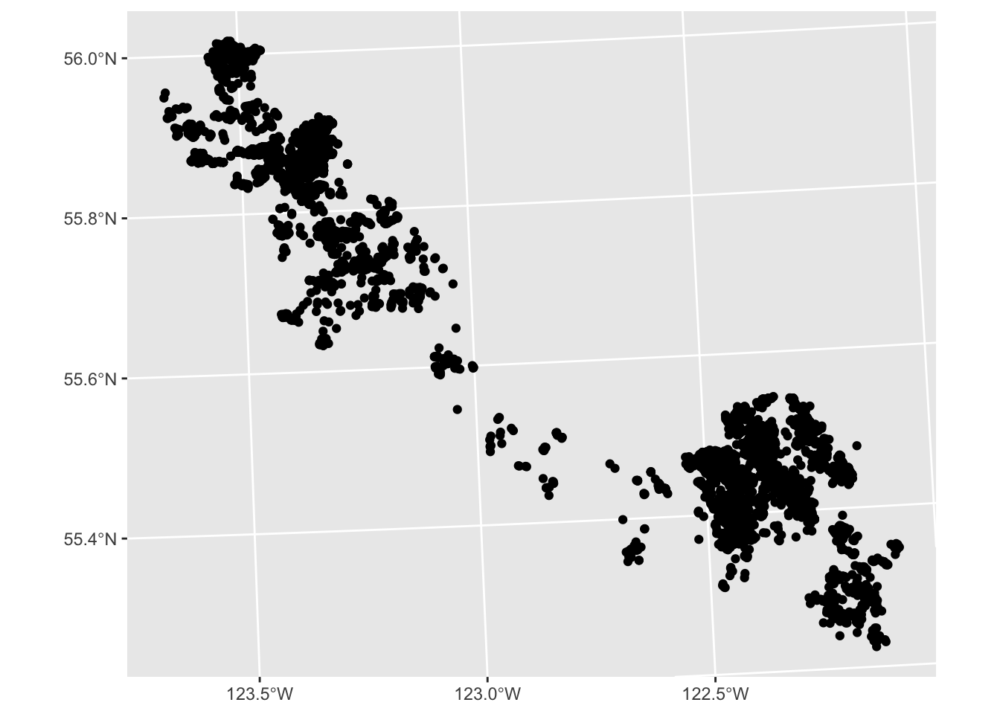
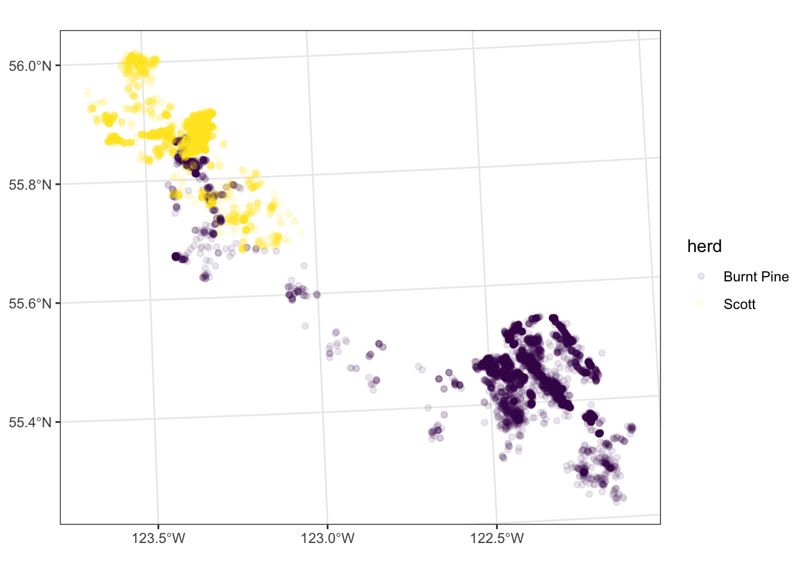
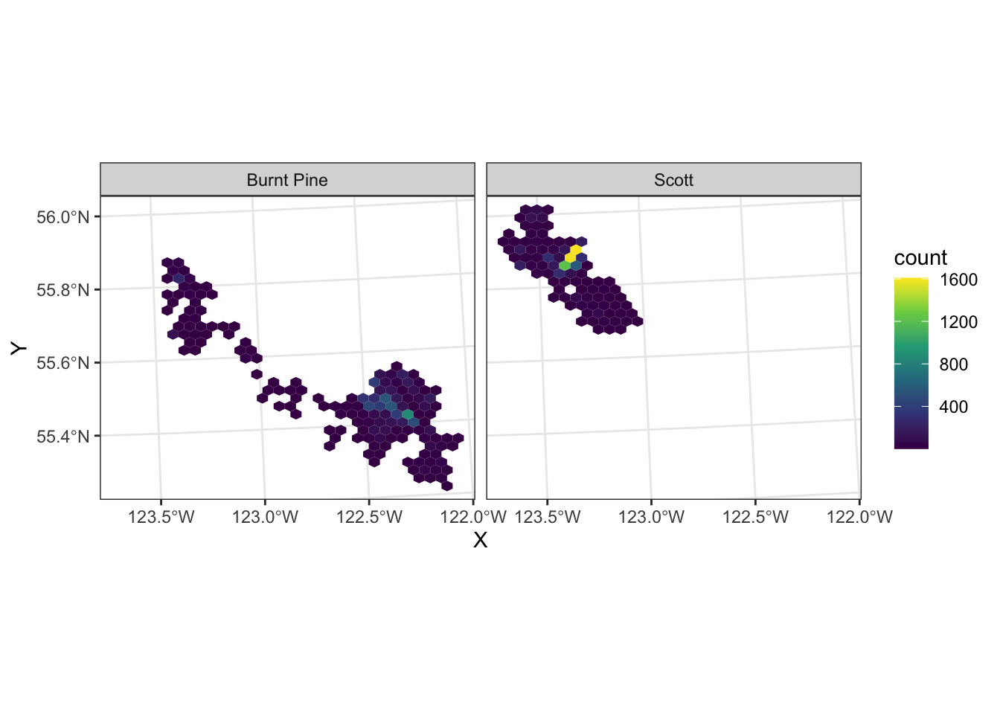
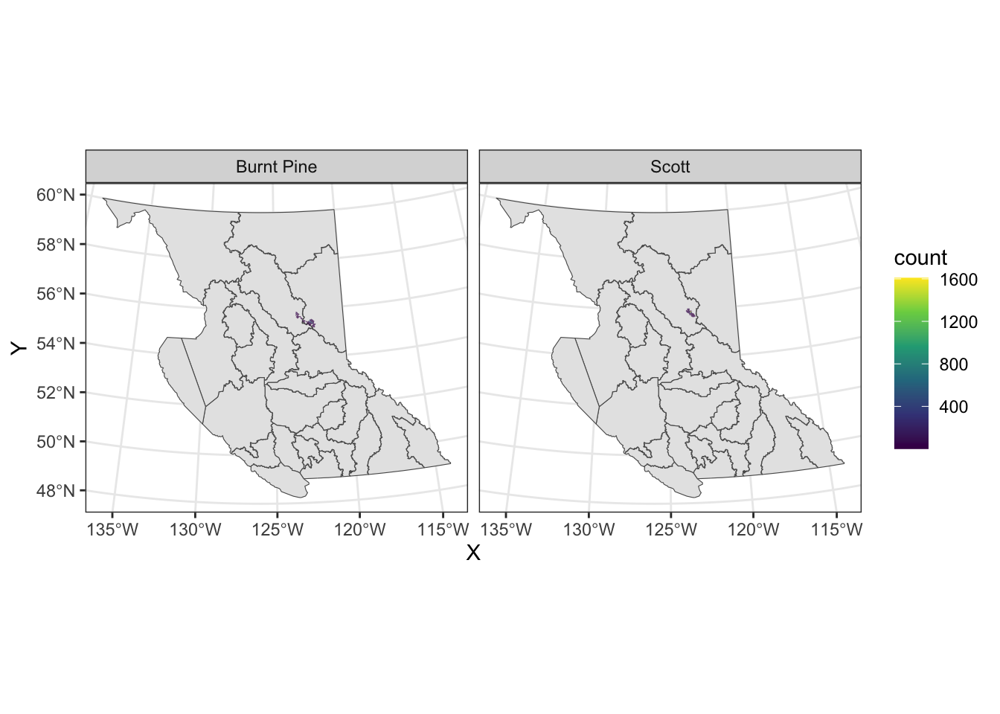
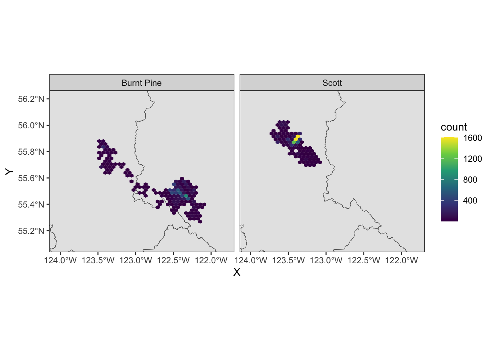
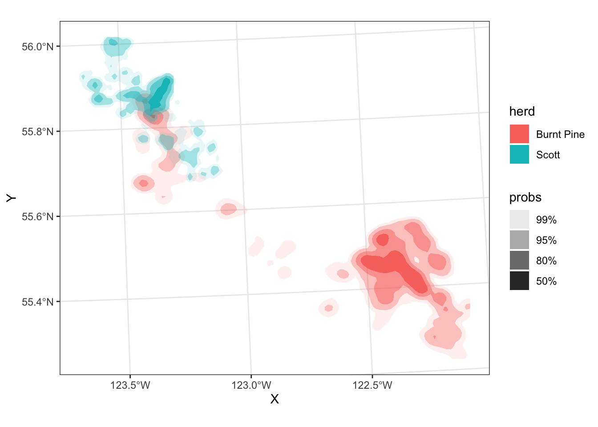

Visualization of Spatial Data
Outline
- Quick recap of
plot() - Pretty (and useful) maps with
ggplot2 - Visualizing point density
- Interactive maps with mapview/leaflet
plot sf objects
Previously we used plot() to quickly plot sf objects:
First, read in the caribou data:
You can see that by default, this plots all of the attributes (up to 9). But we can plot just the points by extracting just the geometry with st_geometry():
st_geometry(caribou) |>
plot()
Or, plot just one variable of interest:
caribou |>
select(herd) |> # select just the herd column (called herd)
plot(key.pos = 1)We can also add a base map for context. Let’s use the bcmaps package to get a map of the B.C. Natural resource boundaries:
library(bcmaps)
nr <- nr_districts()
st_geometry(nr) |>
plot()
caribou |>
st_transform(st_crs(nr)) |> # transform so in the same crs as nr
select(herd) |> # select just the herd column (called herd)
plot(add = TRUE)
But we can quickly get past the point where basic plotting lets us do what we want to do…
ggplot2
ggplot2 is a plotting package built on the theory of the “Grammar of Graphics”, where a plot is built up in layers:
We start with the data, then add the graphical marks (points, lines, bars, etc. called “geom”s) we want to use to represent the data, and specify “aesthetics” for how to map variables in our data to visual representations on the plot.
Let’s start with a simple histogram of fixes over time:
library(ggplot2)
ggplot(data = caribou) + # start with data
geom_histogram( # specify the geom
aes( # specify aesthetics - how to map variables to visual representations
x = date_time
),
position = "dodge" # make the bars side by side instead of stacked
)`stat_bin()` using `bins = 30`. Pick better value with `binwidth`.We can add a “fill” aesthetic to differentiate herds:
library(ggplot2)
caribou <- transform_bc_albers(caribou)
ggplot(data = caribou) + # start with data
geom_histogram( # specify the geom
aes( # specify aesthetics - how to map variables to visual representations
x = date_time,
fill = herd
),
position = "dodge" # make the bars side by side instead of stacked
)`stat_bin()` using `bins = 30`. Pick better value with `binwidth`.We can use the same pattern to make a map:
ggplot(data = caribou) +
geom_sf() # x and y are inferred from the geometry columnggplot(data = caribou) +
geom_sf(
aes(colour = herd, shape = animal.sex)
)
We have a lot of overlapping points, so the actual density of fixes is somewhat obscured. We can fix this in several ways:
Transparency
We can see the density of points better by making them partially transparent. We do this by setting the alpha aesthetic to a value between 0 and 1 (0 is fully transparent, 1 is fully opaque).
ggplot(data = caribou) +
geom_sf(
aes(colour = herd),
alpha = 0.1
) +
scale_colour_viridis_d() +
theme_bw()ggplot(data = caribou) +
geom_sf(
aes(colour = herd),
alpha = 0.1
) +
scale_colour_viridis_d() +
facet_wrap(vars(month)) +
theme_bw()
Binning
caribou <- cbind(st_coordinates(caribou), caribou)
ggplot(data = caribou) +
geom_hex(aes(x = X, y = Y)) +
scale_fill_viridis_c() +
coord_sf() +
theme_bw()We can use facetting to split out the two herds:
ggplot(data = caribou) +
geom_hex(aes(x = X, y = Y)) +
scale_fill_viridis_c() +
coord_sf() +
facet_wrap(vars(herd)) +
theme_bw()If we want to add multiple layers together, we simply add multiple geoms, and add the name of the layer to the data argument in each:
ggplot() +
geom_sf(data = nr) +
geom_hex(aes(x = X, y = Y), data = caribou) +
scale_fill_viridis_c() +
facet_wrap(vars(herd)) +
theme_bw()We can zoom in be specifying the limits in coord_sf()
Density
We can also visualize the probability density of fixes, using the ggdensity package:
library(ggdensity)
ggplot(data = caribou) +
geom_hdr(aes(x = X, y = Y, fill = herd)) +
scale_fill_viridis_d(option = "turbo") +
coord_sf() +
theme_bw()
month_labels <- setNames(month.name, 1:12)
ggplot(data = caribou) +
geom_hdr(aes(x = X, y = Y, fill = herd)) +
scale_fill_viridis_d(option = "turbo") +
scale_alpha_discrete(guide = "none") +
coord_sf() +
facet_wrap(
vars(month),
labeller = as_labeller(month_labels)
) +
theme_bw() +
labs(
title = "Probability density of caribou locations, by month",
x = element_blank(),
y = element_blank(),
fill = "Herd"
)
Add a base map, north arrow, & scale
We can use functions from the ggspatial package to add some nice touches to our map to make it pretty.
We can also customize the labels, legend, and theme elements
# install.packages(c("ggspatial", "prettymapr"))
library(ggspatial)
ggplot(caribou) +
# add background map
annotation_map_tile(zoom = 9) +
# add points
geom_sf(aes(colour = herd), alpha = 0.1) +
# set colour palette and increase legend alpha so you can see it
scale_colour_viridis_d(
option = "turbo",
guide = guide_legend(override.aes = list(alpha = 0.5))) +
# Add a North arrow and scale bar
annotation_north_arrow(style = north_arrow_nautical()) +
annotation_scale(location = "tr") +
coord_sf() +
# Facet by month, custom label the facets
facet_wrap(
vars(month),
labeller = as_labeller(month_labels)
) +
# Add a title, remove X and Y labels
labs(
title = "Probability density of caribou locations, by month",
x = element_blank(),
y = element_blank(),
colour = "Herd"
) +
# Set background of facet labels and legend to white,
# put legend on the bottom
theme(
strip.background = element_rect(fill = "white"),
legend.key = element_rect(fill = "white"),
legend.position = "bottom"
)
We can also look at the movement of just one or two animals:
scott <- read_sf("clean_data/scott_herd_subset.gpkg")
scott <- cbind(st_coordinates(scott), scott)
mvmt <- scott |>
filter(animal.id == "SC_car171")
ggplot(mvmt) +
geom_path(aes(x = X, y = Y, colour = date2)) +
scale_color_viridis_c(n.breaks = 6, trans = "date") +
coord_sf() +
labs(colour = "Date") +
theme_bw() +
theme(
axis.title = element_blank(),
legend.position = "bottom",
legend.key.width = unit(4, "lines")
)
Your turn:
Modify the previous map to make a faceted (small-multiples) map for two or more animals, and add a background map.
Solution
top_animals <- c("SC_car171", "SC_car168")
mvmt <- scott |> filter(animal.id %in% top_animals)
ggplot(mvmt) +
annotation_map_tile(zoom = 10) +
geom_path(aes(x = X, y = Y, colour = date2)) +
facet_wrap(vars(animal.id)) +
scale_color_viridis_c(n.breaks = 6, trans = "date") +
coord_sf() +
labs(colour = "Date") +
theme(
axis.title = element_blank(),
axis.text = element_blank(),
axis.ticks = element_blank(),
legend.position = "bottom",
legend.key.width = unit(4, "lines")
)